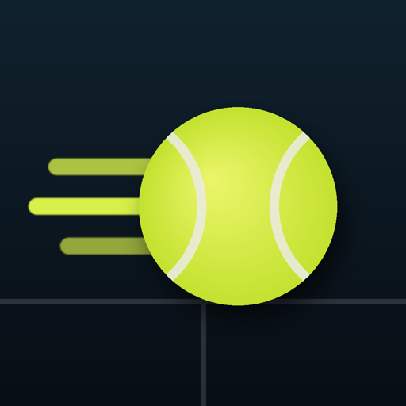
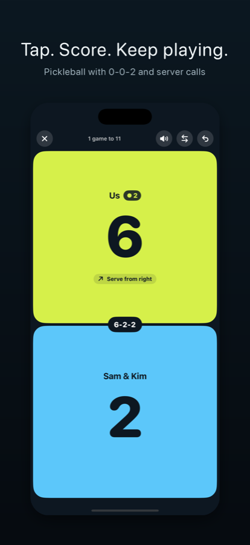
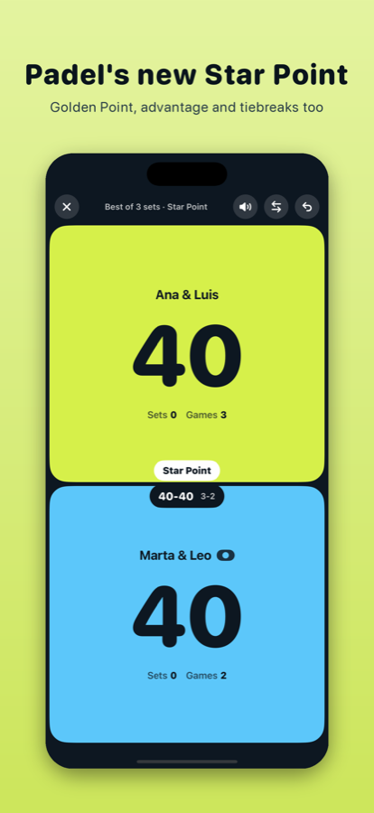
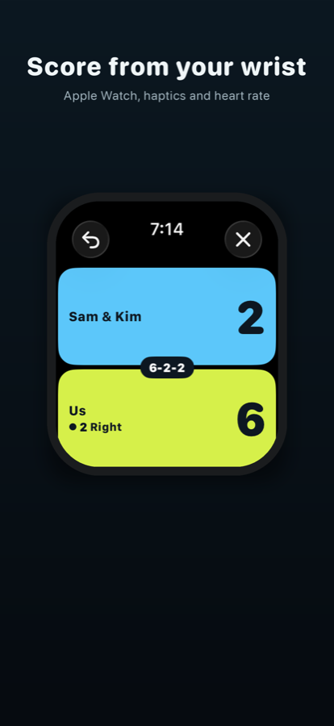
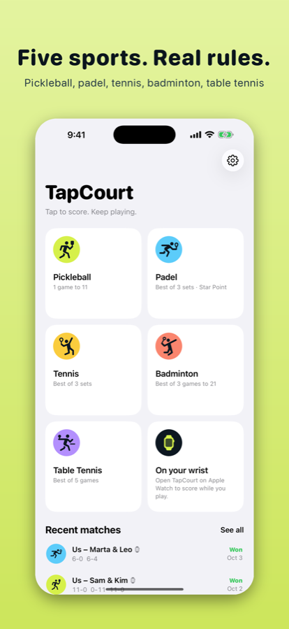
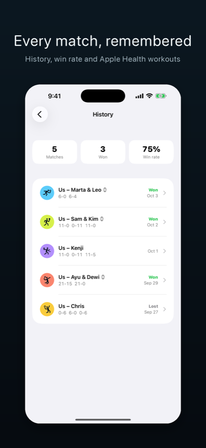

TapCourtNever argue about the score again.
A score keeper for pickleball, padel, tennis, badminton and table tennis on iPhone and Apple Watch. Tap the side that won the rally. TapCourt knows the rules, tracks the server, and tells you when to switch ends.
Free on iPhone. Apple Watch scoring is a one-time unlock, and your first 3 watch matches are free. No ads, no account.

Real rules for five sports
Pickleball
Side-out scoring with the 0-0-2 start, server 1 and 2, and the full score call (4-2-1). Rally scoring to 15 or 21. How pickleball scoring works →
Padel
The 2026 Star Point, Golden Point or advantage, tiebreaks with 1-2-2 serving, and super tiebreak to 10. What is the Star Point? →
Tennis
Advantage or no-ad, tiebreaks, match tiebreak, best of 3 or 5, and short sets to 4.
Badminton
21-point games with the 30-point cap, plus the new BWF 3x15 format. BWF 3x15 explained →
Table tennis
Serve changes every two points, and every point from 10-10. Best of 3, 5 or 7.
Apple Watch
Tap the top or bottom of the screen. Haptics fire when the serve changes, your heart rate shows live, and each match is saved to Apple Health.
Screenshots




FAQ
How do I score on Apple Watch?
Install TapCourt from the Watch app on your iPhone. On the watch, pick a sport and tap the half of the screen for the side that won the rally.
Does it tell me where to serve from?
Yes. For pickleball, badminton, tennis and padel, the serving side shows “Serve from right” or “Serve from left”.
Is Pro a subscription?
No. Pro is a one-time purchase that covers Apple Watch scoring, voice score calls and full history, and it works with Family Sharing.
I bought Pro on my iPhone. Why is the watch still locked?
Open TapCourt on your iPhone once while the watch is nearby, or tap “Restore purchase” on the watch.
Support
Email miaoyong2015@gmail.com. We usually reply within two working days.